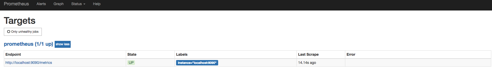

在Kubernetes下部署Prometheus
在上一小节总我们介绍了与Kubernetes的应用管理模型，并且利用MiniKube在本地搭建了一个单节点的Kubernetes。这一部分我们将带领读者通过Kubernetes部署Prometheus实例。
使用ConfigMaps管理应用配置
当使用Deployment管理和部署应用程序时，用户可以方便了对应用进行扩容或者缩容，从而产生多个Pod实例。为了能够统一管理这些Pod的配置信息，在Kubernetes中可以使用ConfigMaps资源定义和管理这些配置，并且通过环境变量或者文件系统挂载的方式让容器使用这些配置。
这里将使用ConfigMaps管理Prometheus的配置文件，创建prometheus-config.yml文件，并写入以下内容：
apiVersion: v1
kind: ConfigMap
metadata:
name: prometheus-config
data:
prometheus.yml: |
global:
scrape_interval: 15s
evaluation_interval: 15s
scrape_configs:
- job_name: 'prometheus'
static_configs:
- targets: ['localhost:9090']
使用kubectl命令行工具，在命名空间default创建ConfigMap资源：
kubectl create -f prometheus-config.yml
configmap "prometheus-config" created
使用Deployment部署Prometheus
当ConfigMap资源创建成功后，我们就可以通过Volume挂载的方式，将Prometheus的配置文件挂载到容器中。 这里我们通过Deployment部署Prometheus Server实例，创建prometheus-deployment.yml文件，并写入以下内容:
apiVersion: v1
kind: "Service"
metadata:
name: prometheus
labels:
name: prometheus
spec:
ports:
- name: prometheus
protocol: TCP
port: 9090
targetPort: 9090
selector:
app: prometheus
type: NodePort
---
apiVersion: extensions/v1beta1
kind: Deployment
metadata:
labels:
name: prometheus
name: prometheus
spec:
replicas: 1
template:
metadata:
labels:
app: prometheus
spec:
containers:
- name: prometheus
image: prom/prometheus:v2.2.1
command:
- "/bin/prometheus"
args:
- "--config.file=/etc/prometheus/prometheus.yml"
ports:
- containerPort: 9090
protocol: TCP
volumeMounts:
- mountPath: "/etc/prometheus"
name: prometheus-config
volumes:
- name: prometheus-config
configMap:
name: prometheus-config
该文件中分别定义了Service和Deployment，Service类型为NodePort，这样我们可以通过虚拟机IP和端口访问到Prometheus实例。为了能够让Prometheus实例使用ConfigMap中管理的配置文件，这里通过volumes声明了一个磁盘卷。并且通过volumeMounts将该磁盘卷挂载到了Prometheus实例的/etc/prometheus目录下。
使用以下命令创建资源，并查看资源的创建情况：
$ kubectl create -f prometheus-deployment.yml
service "prometheus" created
deployment "prometheus" created
$ kubectl get pods
NAME READY STATUS RESTARTS AGE
prometheus-55f655696d-wjqcl 1/1 Running 0 5s
$ kubectl get svc
NAME TYPE CLUSTER-IP EXTERNAL-IP PORT(S) AGE
kubernetes ClusterIP 10.96.0.1 <none> 443/TCP 131d
prometheus NodePort 10.101.255.236 <none> 9090:32584/TCP 42s
至此，我们可以通过MiniKube虚拟机的IP地址和端口32584访问到Prometheus的服务。
